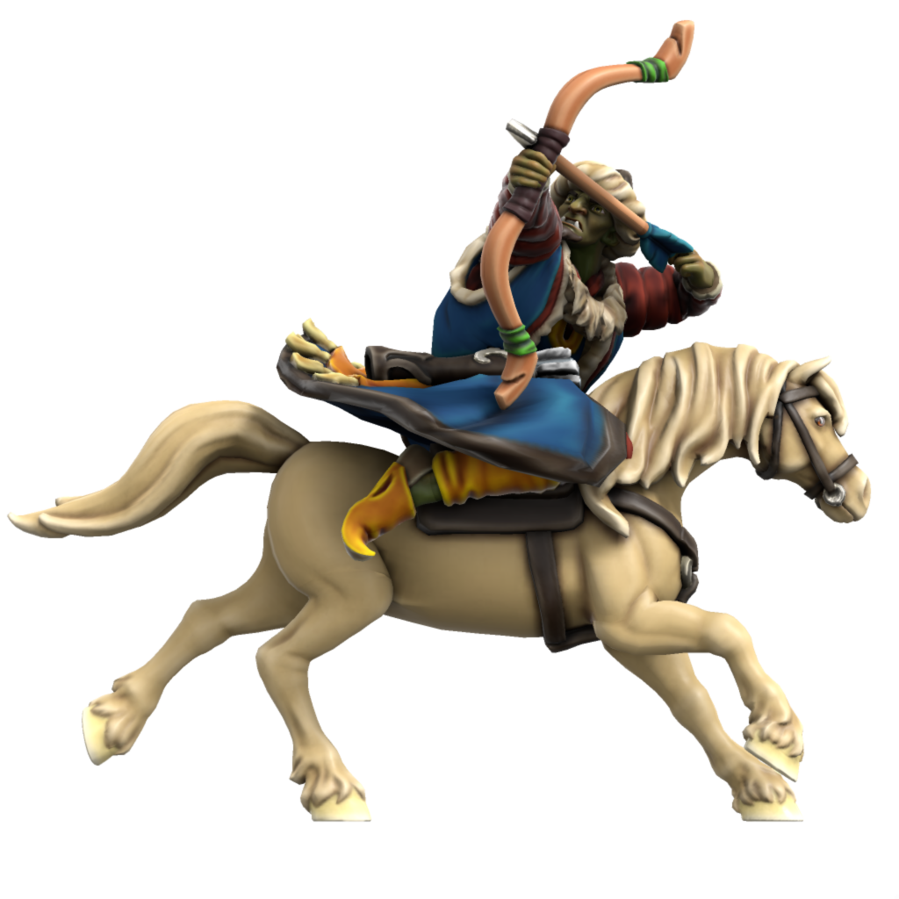

Military
All Atkani are expected to be proficient in both horseriding and archery, a tradition called the "Way Of The Open Sky", meaning any given civillian can serve as a Keshik, a mounted horse archer warrior. When united, the Atkani Horde is near unstoppable, but the nomadic lifestyle of the Atkani people places a logistical restraint on sustained campaigns. The Horde prefer instead to hit hard and fast, decimating the enemy and exacting tribute before returning to their homelands.
Keshik
Mounted archers, the key unit of the Ordo'Atkan horde. The shortbow sacrifices range for accuracy and speed, these units hit fast and hard, deadly at mid range.

Statblock (5e)
Keshik
Armor Class 11 (Hide Coat, Hat)
Hit Points 32 (5d8 + 10)
Speed 30 ft., 🐎 60ft.
Proficiency Bonus +2
| STR | CON | DEX | INT | WIS | CHR |
|---|---|---|---|---|---|
| +2 | +1 | +1 | +0 | +0 | +0 |
| 14 | 13 | 12 | 10 | 11 | 10 |
Pack Tactics. The keshik has advantage on attack rolls against a creature if at least one of its allies is within 5 feet of the creature and the ally isn't incapacitated.
🐎 Encircle. One or more keshik uses their movement to continuously ride in a circle (radius 20ft. + 5ft. for each keshik) around a target. Circling keshik take their action together by attacking with the recurve bow, but rather than rolling to hit, each keshik rolls 1d4 for cardinal direction (clockwise with 1 as north) and all entities inside the circle who aren't behind cover from that direction are hit.
🐎 Hooves. Melee Weapon Attack: +6 to hit, reach 5 ft., one target. Hit: 2d6 + 4 bludgeoning damage.
Multiattack. The keshik makes two attacks with its recurve bow.
Recurve bow. Ranged Weapon Attack: +4 to hit, range 80/320 ft., one target. Hit: 1d8 + 4 piercing damage. The keshik carries a quiver with 25 arrows.
Warhorse
Armor Class 11
Hit Points 19 (3d10 + 3)
Speed 60 ft.
| STR | CON | DEX | INT | WIS | CHR |
|---|---|---|---|---|---|
| +4 | +1 | +1 | -4 | +1 | -2 |
| 18 | 13 | 12 | 2 | 12 | 7 |
Hooves. Melee Weapon Attack: +6 to hit, reach 5 ft., one target. Hit: 2d6 + 4 bludgeoning damage.